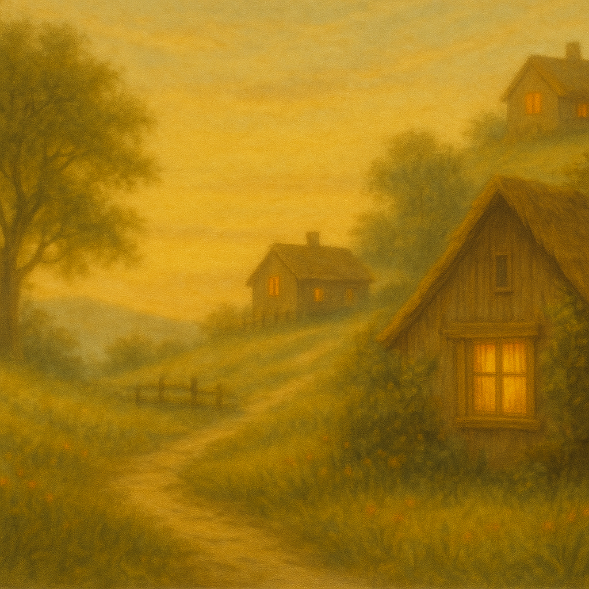

A dreamy collection of urban moods.
Lights, rhythms, and quiet reflections of the city.
Streets Of Old Town
City Lights Waltz
Sunrise Boulevard
Festival in the Old Town Square
Theatre Lane
“I really appreciate the atmosphere you’ve created. The synth textures and ambient flow make for a relaxing and immersive listening experience.”
— Giovanni Orlando, Mindscape Melodies
“Very cool. Great arrangement and performance. Well mixed and balanced.”
— Focusing Minimal Piano & Contemporary Classical
“We appreciate the unique samba lounge instrumental vibe you brought.”
— Cantores Del Mundo
Sunset Nova: Stories Told in Samba and Light
A breezy collection of mellow bossa nova instrumentals.
Sunset light, soft rhythms, and tropical nostalgia echo through these laid-back tunes.
Invitation To Bossa Nova
Silent Sea Shore
Bossa Nova Dreams
Cafe Rio
Sunset Samba
“We’re looking for lighter sounds with soft melodies and textures… We hope to hear more from you.”
— Bruma del Sur (Patagonia)
“Great work on the instrumental — the piano sounds very nice. You create an interesting stereo image and a strong structure.”
— David from Palette
“This is a really cool piece — well played and well produced too.”
— Monie Forrs
Nature Notes: Songs from the Meadow
Gentle instrumentals blooming with nature’s stillness, birdsong, mist and sunlight. A quiet journey through grass, sky, and memory.
Majestic Nature
A New Day Begins
Misty Morning Melody
My Garden of Love
New Sunrise
“A captivating composition that creates a very effective lounge atmosphere. I’ve enjoyed the positive vibe it evokes.”
— Geno Moy

Folk Stories: Whispered on the Wind
Acoustic tales woven from melody and memory. These instrumentals echo the warmth of home, traditions, and the quiet poetry of everyday life.
Village Wedding
Sun-kissed Sicily
My Friend Cowboy
Irish Dreams
Magic Forest
“We like the movement and production of your track. Nice use of the stereo-field.”
— ambiqo records
“Thank you for your submission — I took the time to listen and genuinely appreciate your interest.”
— Samyula
“Nicely produced, with great instrumental melodies and quality sound. We appreciate the effort and creativity.”
— Vibe Agency
Night Letters: Letters Never Sent
Five instrumentals written under lamplight. Hushed, intimate, and filled with the ache of what was left unsent.
Missing You
Stay With Me
It Was a Long Time Ago
She Said Goodbye
Shadows of Past
“Nice track — the guitar performance was solid.”
— Bad Architect Records
“Beautiful work. Sweet melody and gentle interpretation that transports me to an intimate feeling.”
— Peaceful Notes
“I like the track — I’d be happy to hear more.”
— PAKO MUSIC